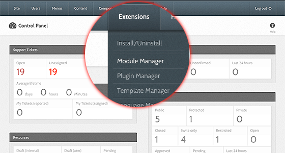
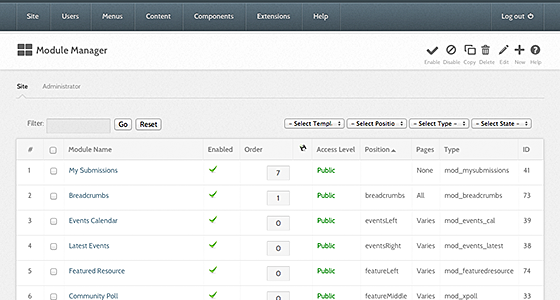
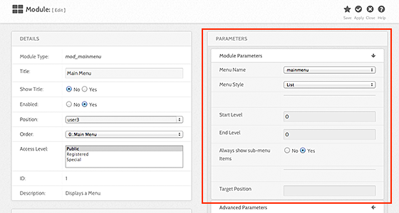
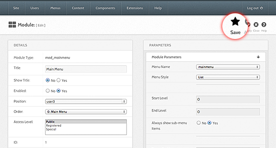

Hub managers
Modules
Most modules carry parameters: what they show, how many items, which feed to read. Parameters belong to one module instance, so the same module type can appear twice on a hub with different settings.
Opening a module's parameters
- Sign in to the administrator interface.
- Choose Extensions > Module Manager.
- Select the module's title in the list.
- Find the collapsible panels on the right of the edit screen: Basic Options, and Advanced Options if the module declares any. A module that declares no parameters has no panels.
- Change what you need and select Save or Save & Close in the toolbar. Changes take effect immediately.
The list screen
The list is filtered by a search box and five drop-downs: Client (Site or Administrator), - Select Status -, - Select Position -, - Select Type -, - Select Access -, and - Select Language -.
Its columns are Title, Status, Position, Ordering, Type, Pages, Access, Language, and ID. Select a column heading to sort by it.
The toolbar offers New, Edit, Duplicate, Publish, Unpublish, Check In, Trash, Options, and Help. Each button appears only if your account holds the matching permission. New opens a pop-up listing the module types you can add. Filtering the list to the trash replaces Trash with Empty trash.
The edit screen
The left column holds the module's Details: Title, Show Title, Position, Ordering, Status, Access, Start Publishing, Finish Publishing, Language, and Note. Custom HTML modules also get a Custom output panel with a Text editor.
Site modules get a Menu Assignment section below that. Module Assignment chooses between all pages, no pages, only the pages selected, or all except the pages selected; the tree below it is where you pick them. Administrator modules have no assignment section.
The right column holds the parameter panels and a table of facts about the module — its type, whether it belongs to the site or the administrator, and its ID.
The toolbar has Save, Save & Close, Save & New, Save as Copy, Cancel, and Help. Save keeps you on the screen; Save & Close returns to the list.
Every module's parameters are listed in the generated configuration reference.
Older screenshots




Rewritten and checked against 2.4-main @ 123ea53b14 on 2026-09-09.